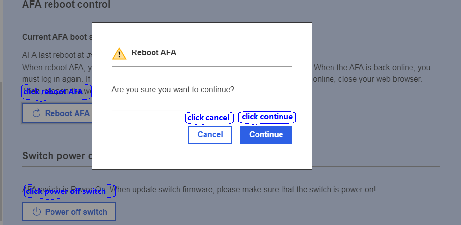

LED control
Click the LED switch to control LED is on or off.

Click the LED switch to control LED is on or off.
Only root and administrator privilege can access this page. Firstly, click choose fan drop-down menu box to choose which fan to set. Then, input fan speed. Finally, click save settings button to set its value, also can click cancel button to cancel setting.
This page provides two functions, one is AFA reboot control, and another is switch power control. Click “reboot AFA” button, confirm dialog appears. Click “continue” button will reboot AFA. User will lose the web browser window several minutes. Then need to re-login. Click “cancel” button will cancel reboot AFA operation.
Click power off switch button will pop-up confirm dialogue box. Click “continue” button will power off switch, and the button becomes to power on switch. Click cancel button will cancel power switch operation.
Click Control Serial over LAN console menu,